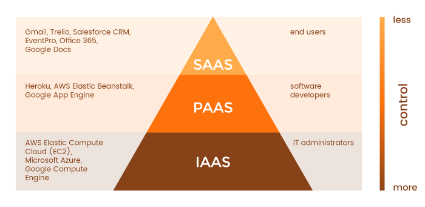

Tes applications rails fracassent. Mais avoue que tu aimerais bien les mettre en ligne pour faire profiter la terre entière de tes super projets. Tkt, on a prévu le coup, et on va te présenter un superbe outil pour mettre en ligne très facilement tes applications : Heroku.
En quelques lignes de commande (et un peu de paramétrage), tu pourras faire profiter ta grand-mère des sites que tu vas faire. Much 🔥
Il existe plusieurs façons de gérer des applications. La première, est celle que tu as vue jusqu'à présent : utiliser un service qui s'occupe de tout pour toi. Ce sont les SaaS (Software as a Service). Aujourd'hui nous allons voir la seconde : développer soi-même ses applications, puis les héberger sur une PaaS (Plateform as a Service). Les PaaS s'occupent de préparer tous les serveurs pour toi, et tu as juste à pousser le code, et elles s'occupent de compiler l'application, et de la faire tourner pour toi.
La dernière solution est pour les personnes qui gèrent en réseau : les IaaS (Infrastrucure as a Service). Les IaaS te filent de l'espace serveur, de la bande passante, et à toi de te démerder et de paramétrer tout cela. Nous ne verrons pas comment brancher tes applications rails vers des IaaS car ce n'est pas le but de la formation.
Plus tu vas bas dans ce schéma, plus tu as le contrôle dans ce que tu fais. Mais aussi plus tu as de paramétrages à faire. Un peu comme Sinatra et Rails. Dans Sinatra on a plus de contrôle, mais il faut tout paramétrer.
Prenons l'exemple d'une entreprise que tu connais bien : The Hacking Project. The Hacking Project développe une plateforme où les moussaillons peuvent suivre des cours et mettre à jour leur projets. On peut dire que c'est une SaaS (c'est pas ultra vrai, mais c'est pour l'exemple). The Hacking Project héberge son code chez Heroku, qui est une PaaS. THP a juste à envoyer le code de son application à Heroku, qui s'occupera de le faire tourner sur sa plateforme de serveurs.
Enfin, Heroku utilise Amazon Web Services qui est une IaaS. Heroku loue de l'espace serveur à AWS, dans lequel il va brancher des serveurs sous Linux, qui s'occupent de faire tourner le code que les SaaS leur envoient.
Heroku est un service de PaaS qui a été créé en 2007. 3 ans après leur création, ils ont été rachetés par SalesForce pour 212M$. C'est l'un des services d'hébergement de code les plus populaires. Ils ont un tarif très sympa : ils te proposent d'héberger gratuitement 100 applications, et tu ne paieras que si ton application cartonne et que tu dois pimp tes serveurs (genre 10 balles par mois, ce qui est très peu cher).
Apprendre à mettre en production est une sacrée étape dans la vie de développeur web. C'est le moment où "ça passe ou ça casse". Le fameux écran d'erreur d'Heroku qui fait des ravages chez les moussaillons te demandera de débugger des choses dans ton app. Mais à la fin, elle sera en ligne, et c'est ce qui compte. Car, comme dirait notre mentor Guillaume "mais ça marchait sur mon ordinateur n'est pas une excuse" : en tant que moussaillon, tu te fous de savoir que le site The Hacking Project marche sur mon ordinateur ; tout le monde veut un site qui marche bien sur thehackingproject.org !
C'est assez ultra simple. Tu vas créer un compte Heroku, installer Heroku pour le faire marcher depuis ton terminal, te connecter, et puis c'est tout ! Pour ceci, je t'invite à suivre la partie de l'installation de Heroku sur le RailsBridgeInstallfest, et tu auras installé Heroku.
⚠️ Attention utilise le même mail que tu as utilisé pour git, GitHub et SSH ! ⚠️
Heroku a une configuration différente de ton ordinateur. Pour faire marcher Heroku, il faut juste paramétrer notre application Rails pour qu'elle soit compatible avec le service. Heureusement, c'est juste quelques réglages à faire. Voici une marche à suivre assez simple pour mettre un site en production.
Pour éviter les galères en fin de projet "mais heuuuu le site il ne veut pas push sur heroku 😢", il est recommandé de TOUJOURS commencer son app par la configuration Heroku, puis de push une première fois, et de voir si ça marche en ligne. Si ça marche, tu peux commencer ton site. Si ça ne marche pas, fais marcher le truc, et au pire, relance l'app (c'est plus facile quand tu viens à peine de commencer que quand tu as 36 modèles à gérer).
L'un des bugs classiques quand les gens veulent push sur heroku est la non concordance entre SQLite3 et PG. Quand tu fais $ rails new
(sans utiliser Postgre), de base rails te sort une application en
SQLite3. Si tu ouvres ton Gemfile, tu pourras retrouver ces lignes là :
# Use sqlite3 as the database for Active Record
gem 'sqlite3'Ceci veut dire : "pour ma base de données, utilise SQLite3 stp merci". Puis lignes 36 -> 42 tu auras ceci :
group :development, :test do
# Call 'byebug' anywhere in the code to stop execution and get a debugger console
gem 'byebug', platforms: [:mri, :mingw, :x64_mingw]
# Adds support for Capybara system testing and selenium driver
gem 'capybara', '~> 2.13'
gem 'selenium-webdriver'
endCeci veut dire : tout ce qui est entre ces lignes sera des gems que
j'utilise pour le développement et le test. En gros, tout sauf la
production. C'est peut être un peu complexe pour le moment, mais sache
une chose, cela veut dire que la ligne 12 n'étant pas dans un group
spécifique, et bien nous disons à notre application rails "pour ma base
de données, utilise SQLite3 stp merci, en développement, en test et en production".
Le souci est que Heroku n'utilise pas SQLite3 en production, et dès que tu mentionneras SQLite3 en production, il t'enverra chier. Il faut donc virer cette ligne 12, puis dire que l'on ne se sert de SQLite3 qu'en développement et en test, puis pour la production, on va utiliser l'outil de base de données de heroku : PostGreSQL. Pour ceci, rien de plus simple : Remplace les lignes 8 et 9 :
# Use sqlite3 as the database for Active Record
gem 'sqlite3'et remplace la par :
group :development, :test do
gem 'sqlite3'
end
group :production do
gem 'pg', '>= 0.18'
endEt voilà. Tu utilises SQLite3 en Developpement, en Test ; et tu utilises PostgreSQL en production. Comme Heroku.
Maintenant que l'on a un gemfile compatible on va installer le bundle : bundle install --without production Pourquoi le --without production
? Parce que sinon le bundle va installer nos gems de production, qui ne
nous concernent pas. Il risque de planter si PostGreSQL n'est pas
installé sur ton ordi et le pg du groupe de production fera de la 💩
Si tu es un moussaillon assidu et que tu as bien PG de branché, et que tes rails new font du rails new -d postgresql, et bien rien à changer, ton app est prête à partir chez Heroku (tu peux voir dans ton Gemfile que pg a remplacé SQLite3).
Une fois que ta base de données est paramétrée, tu n'as plus qu'à push ton application sur Heroku.
Avant de push, tu vas créer ton application sur Heroku :
$ heroku createCe qui aura pour effet de créer une application sur Heroku, et la lier à ton application
De base, ton application aura un nom de genre pacific-turkey-4983849. Mais tu peux la changer en un truc plus sympa (à condition que ce ne soit pas pris) du genre nom-de-ton-app avec la ligne suivante :
$ heroku create nom-de-ton-appEt tu peux changer le nom de ton app existante avec :
heroku apps:rename nouveau-nom-de-ton-appEt voilà, LA partie importante. Avant de faire le push, on va voir un truc ensemble. Fais donc :
$ git remote --vIl devrait te renvoyer un truc du genre :
heroku https://git.heroku.com/nom-de-ton-app.git (fetch)
heroku https://git.heroku.com/nom-de-ton-app.git (push)
origin git@github.com:username/repo.git (fetch)
origin git@github.com:username/repo.git (push)Si tu n'es pas trop en galère sur git, tu devrais comprendre qu'en créant ton application, tu as branché une nouvelle remote à git. En plus de pouvoir push ton joli travail sur Origin (donc GitHub), tu peux le push sur la remote Heroku. Et bien testons cela :
$ git push heroku masterLà tu devrais avoir un script assez long, qui peut balancer quelques warnings, mais qui à la fin devrait dire un truc du genre :
remote: -----> Compressing...
remote: Done: 48M
remote: -----> Launching...
remote: Released v6
remote: https://nom-de-ton-app.herokuapp.com/ deployed to Heroku
remote:
remote: Verifying deploy... done.
To https://git.heroku.com/nom-de-ton-app.git
* [new branch] master -> masterEt voilà, tu as ton application en production sur Heroku. Tu peux aller sur son url et t'amuser avec (à condition qu'elle ne soit pas vide 😉)
Alerte générale, cette erreur est un grand classique de Heroku. Alloue un bout de cerveau disponible et enregistre cette information.
Si ton application a une base de données, et qu'il faut faire une migration, il te faudra dire à heroku de migrer, après avoir push. Si tu ne le fais pas, l'application va te péter à la gueule. Pour ceci, rentre la commande :
$ heroku run rails db:migrate(C'est comme en local sur ta machine, mais en production).
Celle-là tu la verras plus tard, mais sache que pour l'asset pipeline, il faudra aussi rentrer une manip pour éviter que Heroku t'explose à la gueule.
Si jamais tu tombes sur une erreur, ou bien si tu tombes sur ceci :
🙏Pour l'amour de dieu, utilise Google et ton bon sens, avant de te précipiter sur #help 🙏
Heroku te permet d'héberger ton app sur des serveurs à eux. Les serveurs font tourner postgresql donc il te faudra changer certains paramètres en base de données si tu utilises encore SQLite3.
Voici un petit flow pour push une app sur Heroku :
$ rails new myapp
$ cd myapp
$ heroku create un-nom-trop-cool
#Je change le Gemfile pour la BDD si je suis en SQLite3
$ bundle install
$ git add .
$ git commit -m "First commit and pushing to Heroku"
$ git push heroku master
$ heroku run rails db:migrate #optionnel si tu as une migration à migrerPour ceux qui veulent aller plus loin et connaître les paramétrages, voici comment mettre en ligne un site sur Heroku, version BG. Tout d'abord, la doc de Heroku fait le pas à pas pour bien mettre en ligne un site avec Heroku. Tu peux aussi aller sur l'article de la mise en production fait par The Odin Project.
Hier tu as vu comment faire des sessions temporaires. Aujourd'hui nous allons voir les cookies permanents 😻
Avant les cookies, c'était bien galère de conserver les données des utilisateurs se baladant sur ton site. Ils étaient déjà utilisés en informatique quand Lou Montulli a eu l'idée de s'en servir dans les communications web en juin 1994. En ce temps-là, Montulli était employé de Netscape Communications qui avait développé une app' de commerce en ligne pour un client. Les cookies ont offert une solution au problème de fiabilité concernant l'implémentation d'un panier d'achat virtuel.
Aujourd'hui ils sont omniprésents.
Tiens d'ailleurs, sais-tu d'où vient le terme "cookie" ? D’après Wikipedia, il est dérivé de « magic cookie » , un concept bien connu dans l'informatique d'UNIX qui a inspiré le nom, mais aussi l'idée des cookies de navigation.
Comme tu as pu le voir hier, session[:user_id] est
sécurisé grâce à une clé de chiffrement. Il n'est donc pas possible de
changer à la main la session à partir de la console Chrome / Firefox
pour usurper l'identité d'un utilisateur. Les sessions sont pratiques et
sécurisées. Cependant, si un utilisateur ferme sa fenêtre, il est
déconnecté de l'application. On aimerait bien mettre en place un système
pour se souvenir de lui la prochaine fois qu'il revient sur le site.
C'est ainsi que sont nés les cookies !
Un cookie est comme une session, sauf qu'il reste dans ton navigateur pour une durée déterminée. Il est stocké au format hash, un peu comme les sessions. Si tu vas dans ton controller et que tu tapes la ligne :
cookies[:user_id] = { value: @user.id, expires: 20.years.from_now.utc }Tu vas créer un cookie qui périme dans 20 ans et qui stocke l'id de l'utilisateur.
Par souci de praticité, on va utiliser la méthode .permanent qui revient à dire à un cookie de rester 20 ans. Par exemple, pour stocker le user_id dans un cookie pour 20 ans, tu as juste à écrire :
cookies.permanent[:user_id] = user_idEt pour récupérer les données stockées dans le cookie, tu n'as qu'à faire :
user_id = cookies[:user_id]Eh bien Jamy, il suffit de récupérer le projet d'hier, puis de remplacer toutes les occurrences de sessions par cookies, et à nous la gloire ?
Non, désolé ! En fait, si stocker le user_id dans les
sessions marche, ce n'est pas sécurisé dans les cookies. Il nous faut
une astuce similaire à celle des mots de passe : utiliser un token dans
le cookie, ne stocker en base que la version hashée de ce token, puis de
comparer la version hashée du token avec celle de la DB. Nous allons
voir dans cette ressource comment gérer ça.
Mais Jamy, c’est pas super dangereux de stocker des identifiants de façon permanente dans son navigateur ?
Tu as tout à fait raison ! Contrairement aux informations stockées dans une session, les cookies permanents sont vulnérables aux attaques appelées « session hijacking », c’est-à-dire le vol d’un remember_token permettant à l’attaquant de se loguer sur le compte de l’utilisateur.
😎PETITE LEÇON DE HIJACKING
Il y a 4 façons de voler des cookies :
remember_token en clair.Heureusement, il existe des solutions pour chacune de ces failles :
remember_token en clair dans une DB, mais seulement une version cryptée (hash digest). Note qu’en
théorie, un hacker ne peut pas reconstituer un token à partir de son hash digest.
Avant de te montrer le code à ajouter pour mettre en place un système de cookies, voyons ensemble les étapes nécessaires pour le faire marcher.
Nous allons stocker deux cookies dans le navigateur de l'utilisateur :
id de l'utilisateurremember_token lié à l'utilisateurEn base de données, nous allons créer dans la table des utilisateurs une colonne remember_digest qui est la version hashée du remember_token présent dans le cookie.
Plus précisément :
Quand un utilisateur se login, on va créer un remember_token au hasard et le stocker dans un cookie. On va ensuite générer une version hashée de ce remember_token que l'on va stocker en DB dans la colonne remember_digest.
Enfin, pour définir le current_user, il nous faudra récupérer le user_id depuis l'un des cookies et le remember_token depuis l'autre. On va ensuite hasher ce remember_token puis le comparer avec le remember_digest de l'utilisateur trouvé grâce au user_id. S'ils concordent, c'est que tout va bien !
Pour se déconnecter, on va simplement retirer les cookies du navigateur de l'utilisateur, puis passer son remember_digest à nil.
Bref. Cela fait beaucoup d'informations, mais avec la pratique et le reste de la ressource, tout va mieux s'imbriquer, ne t'en fais pas ;)
remember_digestAfin de pouvoir procéder à l'authentification, on va comparer le remember_token stocké dans le cookie avec le remember_digest que l'on a en bas. Il faut donc créer une colonne remember_digest dans la table des utilisateurs.
$ rails generate migration add_remember_digest_to_users remember_digest:stringTu devrais maintenant trouver ta migration dans le dossier db/migrate :
class AddRememberDigestToUsers < ActiveRecord::Migration[5.0]
def change
add_column :users, :remember_digest, :string
end
endIl ne te reste plus qu’à exécuter ta migration avec le classique : $ rails db:migrate
Maintenant, nous allons mettre en place une méthode permettant de stocker en base le fameux remember_digest de l'utilisateur. Va dans ton model des utilisateurs :
class User < ApplicationRecord
(...)
def remember(remember_token)
remember_digest = BCrypt::Password.create(remember_token)
self.update(remember_digest: remember_digest)
end
endCette méthode est assez simple. Nous allons faire passer en variable locale un remember_token, puis stocker sa version hashée en base de données. La fonction BCrypt::Password.create(string)
permet de générer un hash sécurisé à partir d'un string. Cette string
peut être un mot de passe ("azerty") ou une suite aléatoire de
caractères ("b8ius4wAyCQeEcLmHpS-7g"). Une fois ton digest obtenu, tu
n'as plus qu'à le sauvegarder en DB, comme pour les mots de passe ! Si
jamais tu te fais hacker ta base, aucun identifiant en clair ne sera
compromis.
Attends, Jamy… Pourquoi est-ce qu’on se casse la tête à faire des remember_token quand il suffirait de stocker dans les cookies une version cryptée du user_id ?
Ok, imagine qu’un hacker prenne possession de ton signed cookie. Comment ferais-tu pour l’empêcher de se loguer sur ton compte Ad vitam æternam ? En effet, tu ne peux pas changer ton id utilisateur… (à moins de fermer ton compte et t’en créer un nouveau, certes 😏)
En revanche, il te suffit de te déconnecter d’un site pour brûler ton remember_token et en générer un nouveau en te re-connectant avec ton mot de passe (que ne possède pas l’attaquant). Ce remember_token t’offre donc la possibilité de contrer le vol de tes cookies (en te déconnectant) !
C’est pour cette raison que les 2 cookies sont nécessaires.
Ok, nous avons stocké en base de façon sécurisée un remember_digest. Maintenant, il nous reste à gérer trois éléments dans les controllers :
login(user) que nous avons vue hier, nous allons créer dans le helper une méthode remember(user) qui permet de créer les cookies pour l'utilisateur et de stocker le hash du cookie en base de données.sessions_controller quand l'utilisateur se login au site.current_user afin d'authentifier facilement l'utilisateur à partir du cookie.remember(user)La méthode remember(user) ressemble à la méthode login(user) : elle va nous servir à créer le cookie, puis à stocker le remember_digest en base de données. Voici à quoi elle va ressembler dans le fichier app/helpers/sessions_helper.rb :
def remember(user)
# ici je vais créer un remember_token qui est une suite aléatoire de caractères
remember_token = SecureRandom.urlsafe_base64
# j'ai mon token, je vais stocker son digest en base de données :
user.remember(remember_token)
# maintenant, je vais créer les cookies : un cookie qui va conserver l'user_id, et un autre qui va enregistrer le remember_token
cookies.permanent[:user_id] = user.id
cookies.permanent[:remember_token] = remember_token
endGrâce à ces lignes, tu crées un remember_token que tu stockes dans un cookie dans le navigateur de l'utilisateur. Ce que toi tu gardes en base, c'est le digest de ce remember_token. Ainsi, si jamais tu te fais hacker ta base de données, impossible pour les hackeurs de récupérer les remember_token des utilisateurs et de se connecter à leur place.
Mais dis-donc Jamy, c'est quoi SecureRandom.urlsafe_base64 ?
C'est une commande assez pratique permettant de générer une string au hasard. Tu peux essayer en lançant la console avec rails console puis en rentrant plusieurs fois cette ligne :
> SecureRandom.urlsafe_base64
=> "MPQWxQ4K1gYpfJ9f1v0KAA"
> SecureRandom.urlsafe_base64
=> "JhpQ9GYx2X4odYdzVZYVTQ"
> SecureRandom.urlsafe_base64
=> "B683OcT80nl0BA-H-UoQ6A" Un peu comme un utilisateur choisissant "azerty" comme mot de passe, toi tu prends une suite de caractères au hasard.
Tu as maintenant ta méthode remember_user permettant de cuisiner les
cookies de notre utilisateur ! Parfait. Il ne nous reste plus qu'à
l'appeler pour stocker les cookies chez l'utilisateur. Nous allons le
faire quand l'utilisateur se login au site, donc dans la méthode create
du sessions_controller.
sessions#createBon. Maintenant, il faut cuisiner le cookie à chaque fois qu'un
utilisateur se login au site. Pour ceci, il faut simplement ajouter la
ligne remember(user) dans la méthode create du sessions_controller. Voici à quoi cette dernière devrait ressembler :
def create
user = User.find_by(email: email_dans_ton_params)
if user && user.authenticate(password_dans_ton_params)
login(user)
# on va cuisiner le cookie pour l'utilisateur
remember(user)
# redirige où tu veux, avec un flash ou pas
else
flash.now[:danger] = 'Invalid email/password combination'
render 'new'
end
endTout simplement ! Les helpers permettent de juste insérer une ligne pour ce que tu veux faire. Cela décharge le controller et les rend hyper lisibles. Tu peux appeler cette méthode ailleurs, par exemple à la création de l'utilisateur !
Jamy, c'est quoi la différence entre remember(user) et user.remember ?
Excellente question. remember(user) appelle la méthode dans le helper. Cette méthode va cuisiner les cookies et sauvegarder le remember_digest en base. user.remember(token) appelle la méthode d'instance remember qui est dans le model User. Cette méthode va prendre un token en paramètre et stocker son digest dans la colonne remember_digest de l'utilisateur. Les deux sont différentes, donc sache laquelle appeler au bon moment ;)
Maintenant que nous savons cuisiner nos cookies, il est l'heure d'en profiter, non ? Voyons comment les utiliser pour reconnaitre qui est l'utilisateur caché derrière.
current_userGrâce aux helpers, nous avons une méthode permettant de récupérer facilement l'utilisateur connecté : current_user. Afin de savoir si un utilisateur est bien login, nous allons comparer le remember_token avec celui stocké en base. Si le hash du remember_token
est identique à celui de la DB, c'est que nous avons affaire à la bonne
personne. Avant de donner la méthode current_user, voyons comment
comparer un token avec son digest sur BCrypt. Va en console et lance les
méthodes suivantes :
> token = SecureRandom.urlsafe_base64
=> "gaWWRiG-9BdBB89Zysi63w"
> digest = BCrypt::Password.create(token)
=> "$2a$10$5bV3cjd6OYun.AW6LuPi9OcA4efD39Oa2VHUWiL5j9LZAhOQ4Yzcu"
> BCrypt::Password.new(digest).is_password?(token)
=> true
> other_token = SecureRandom.urlsafe_base64
=> "J2bvuq9rj7HMyOag4VKKHA"
> BCrypt::Password.new(digest).is_password?(other_token)
=> falseDans ces quelques lignes, nous avons créé un token de manière
aléatoire, puis généré son digest, puis comparé les deux avec la ligne BCrypt::Password.new(digest).is_password?(token). Comme ils concordaient, BCrypt nous a répondu true. Pour les deux dernières lignes, le other_token ne correspond pas au premier digest. BCrypt nous a répondu false.
Maintenant que tu sais vérifier un token et son digest, voyons voir comment changer la méthode current_user pour faire notre système d'authentification :
def current_user
if session[:user_id]
# même chose que hier
current_user = User.find_by(id: session[:user_id])
# nous allons vérifier s'il y a bien un cookie contenant l'id de notre utilisateur
elsif cookies[:user_id]
# nous allons trouver l'utilisateur en DB à partir du cookie qui stocke le user_id
user = User.find_by(id: cookies[:user_id])
if user
# nous allons prendre le remember_token stocké en cookie, le hasher, puis le comparer avec notre remember_digest stocké en base
remember_token = cookies[:remember_token]
remember_digest = user.remember_digest
user_authenticated = BCrypt::Password.new(remember_digest).is_password?(remember_token)
# si tout est bon, il ne nous reste plus qu'à souhaiter bienvenue à l'utilisateur !
if user_authenticated
log_in user
current_user = user
end
end
end
endVoici la version "compréhensible" de la méthode, en mode pas à pas. Pour t'aider, voici une version un peu plus condensée de la méthode :
def current_user
if session[:user_id]
current_user = User.find_by(id: session[:user_id])
elsif cookies[:user_id]
user = User.find_by(id: cookies[:user_id])
if user && BCrypt::Password.new(user.remember_digest).is_password?(cookies[:remember_token])
log_in user
current_user = user
end
end
endMais dis-donc Jamy, pourquoi on login(user) si ce dernier est bien authentifié avec les cookies ?
Bien vu ! Si tu vas dans ton helper, login(user) permet de générer un session[:user_id]
qui permet d'identifier plus rapidement l'utilisateur grâce aux
sessions. Cela t'évite de devoir vérifier les cookies à chaque
chargement de page !
Et voilà ! Tu viens de mettre en place un système d'authentification d'utilisateurs à partir de cookies. Nous allons voir une dernière chose : permettre à l'utilisateur de se déconnecter. Pour le moment, s'il souhaite se déconnecter, il n'a pas d'autre choix que d'effacer à la main ses cookies avec la console Chrome. Pas ouf. On va donc modifier les méthode logout pour détruire les cookies.
Bon, que voulons-nous faire quand on se logout ? C'est assez simple,
il suffit d'effacer les cookies et de remettre le remember_digest à nil.
C'est tout ! Crée donc une méthode forget(user) dans app/helpers/sessions_helper.rb :
def forget(user)
# on remet le remember_digest à nil puisqu'il ne nous servira plus :
user.update(remember_digest: nil)
# on efface les cookies dans le navigateur de l'utilisateur
cookies.delete(:user_id)
cookies.delete(:remember_token)
endPuis, on ajoute la méthode logout dans ce même helper :
def log_out(user)
session.delete(:user_id)
forget(user)
endVoilà, tu n'as plus qu'à appeler la méthode log_out(user) dans la méthode destroy du sessions_controller !
Voici quelques ressources sur les sessions et cookies :
Nous voici dans la dernière partie du Gossip Project. Ce site aura été génial et on espère que tu as kiffé être le champion des potins. Aujourd'hui nous allons :
Commence par mettre en ligne l'application que tu as codée hier. Attention, on te prévient : la première fois qu'on met en ligne, ça peut piquer, car on se tape un max de problèmes. Impossible pour nous de lister ici tous les soucis que tu risques de rencontrer en chemin : il faut en passer par là pour te former à Heroku. Nos conseils :
Reprends le projet de hier, et remplace le système sessions par un système de cookies pour que les utilisateurs puissent rester sur le site même en fermant l'application.
Fais en sorte que ton application se souvienne de l'utilisateur quand le dernier s'inscrit sur le site. C'est à dire tu devras cuisiner des cookiers au moment où une personne se signup sur le site.
Quand tu vas sur un site, ce dernier en général te propose si tu veux qu'il se souvienne de toi. En gros, il te demande si tu veux que l'on cuisine des cookies et que tu n'ais pas besoin de te connecter la prochaine fois que tu reviens dessus. Nous allons te demander de mettre en place la checkbox éponyme à super chanson de BlueBoy.
En gros, aux formulaires concernés, nous allons te demander d'ajouter une petite case qui propose à l'utilisateur de se souvenir de lui. S'il coche cette case, l'application va cuisiner des cookies pour se souvenir de lui. S'il ne coche pas cette case, l'application ne va pas cuisiner de cookies.
⚠️ l'application devra quand même utiliser les sessions afin d'éviter à une personne de rester bloquée dans l'application.
Propose la checkbox au signup d'un utilisateur, c'est à dire quand ce dernier s'enregistre sur ton site.
Propose la checkbox au login d'un utilisateur, c'est à dire quand ce dernier se connecte à ton application.
La version finale de The Gossip Project !
Et voilà ! Bravo, tu viens de passer toute une semaine à coder from scratch une application simple, mais fonctionnelle et avec un système d'authentification. Cela n'aura pas été facile, mais tu auras appris plein de choses et tu fais marcher une application basique en Rails. Peut être que tu n'es pas trop serein pour tes controllers, mais c'est normal d'être dans le doute. Cela ne fait après tout qu'une semaine que tu fais du Rails. Tu auras donc tout ce weekend pour réviser en douceur si tu te sens trop fébrile et/ou profiter de la semaine prochaine pour consolider ces bases.
Petit bonus, ces deux derniers jours t'auront donné des bases en cybersécurité qui pourront te faire briller en entretien et/ou qui seront fondamentales pour ta culture générale de la compréhension de l'univers du web. Tu sais enfin comment un cookie marche et c'est ultra indispensable au vu de leur omniprésence sur le web. On aurait pu te donner une gem qui fait le café en même temps que tes cookies, mais nous savons que d'apprendre ces bases en sécurité web te seront plus qu'utiles dans le futur.
La semaine prochaine nous allons voir comment utiliser des gems pour t'aider à coder plus rapidement tes applications. Ainsi la gem Devise fera un système d'authentification complet pour toi. Tu apprendras à utiliser des APIs pour donner un peu de pep's à ton application, puis tu verra comment ajouter du front.
Bref, tu peux archiver The Gossip Project, et nous te souhaitons une bonne fin de semaine et un bon courage pour la semaine prochaine. Tu feras tout au long de la semaine un clone d'Eventbrite. Stylé, n'est-ce pas ?